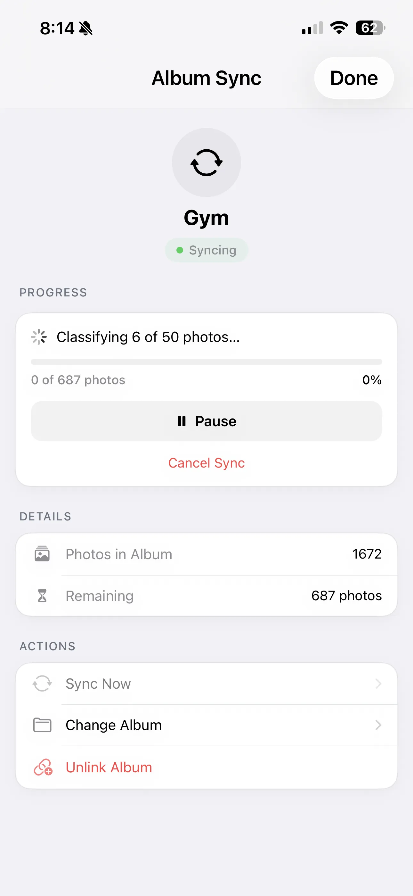

Smart Integrations: Hevy Workouts + Album Sync
Your workout volume, exercises, and sets—auto-attached to the exact photo taken that day. Plus hands-free album sync that keeps your timeline current without lifting a finger.

GainFrame is now available.
Download now from the App Store and start tracking your true progress.
The power of this combination: when you compare two photos taken months apart, you're not just seeing the visual change — you can see exactly what training produced that change. Did your volume increase? Are you doing more compound movements now? The data is right there next to the photos.
Think of it as a training journal that writes itself. Take a gym selfie, log your workout in Hevy, and GainFrame connects the two automatically. Months later, every photo in your timeline has the full context of what you were training.
Smart Album Sync: hands-free photo import
Most progress photo apps require you to manually import photos every time you take one. GainFrame's Smart Album Sync eliminates that step entirely.
Here's how it works:
- Select a source album. Pick any album from your Photos library — for example, a "Gym" album you already organize your selfies into.
- GainFrame watches it. Whenever new photos appear in that album, GainFrame automatically imports and processes them — AI classification, scoring, and timeline insertion happen in the background.
- Smart filtering. The sync engine skips screenshots, saved photos from other apps, and non-body images. Only actual gym photos make it through.
- Deletion blocklist. If you delete a photo from GainFrame, the sync engine remembers it and won't re-import it — even if it's still in the source album.

The result: your GainFrame timeline stays up to date without any manual effort. Add a photo to your gym album, and next time you open GainFrame, it's already classified, scored, and sitting in your timeline.
Why context beats photos alone
A photo by itself is a data point. A photo with workout data, body composition metrics, and weight from Apple Health is a complete snapshot of that moment in your fitness journey.
When you compare two of these snapshots — say, January vs. June — you don't just see that your shoulders got wider. You see that your overhead press volume doubled, your body fat dropped 3%, and your weight stayed the same. That's useful information. It tells you what's working and what to keep doing.
GainFrame is the only progress photo app that makes this connection automatically. Other apps store photos. GainFrame contextualizes them.
Setting it up
Both integrations take less than a minute to enable:
- Hevy: Open Settings → Integrations → Hevy. Sign in once. GainFrame syncs your workout history and auto-attaches future workouts to matching photos.
- Album Sync: Open Settings → Album Sync → Select Album. Choose your gym photo album. New photos import automatically from that point on.
- Apple Health: Weight data syncs automatically via HealthKit. No additional setup needed — just allow access when prompted.
Once enabled, everything runs in the background. No daily maintenance, no manual imports, no forgetting to log things. The system works while you train.
Start connecting your data
Your progress photos deserve more than a camera roll. Attach your workout data, sync your albums, and let GainFrame build the complete picture of your transformation — automatically. Get started with our tips for taking better progress photos.
Related Articles
GainFrame is now available.
Download now from the App Store and start tracking your true progress.